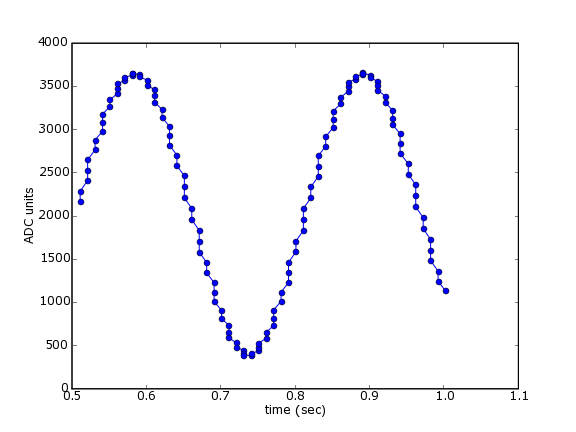
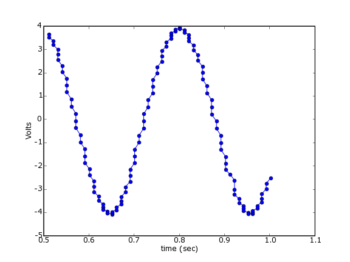
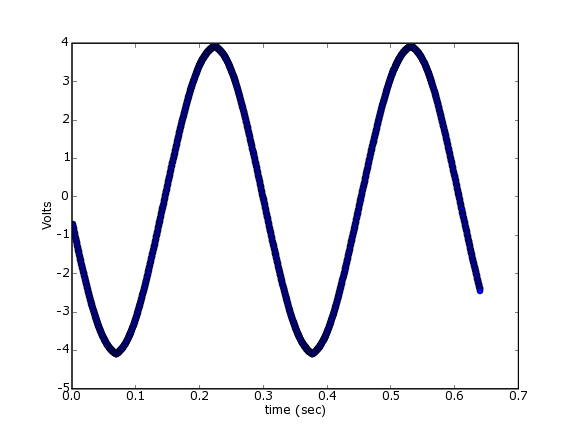
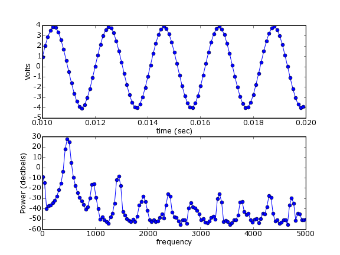

TableOfContents
This pages illustrates the use of the inexpensive (about $150) PMD USB-1208FS data acquisition device from Measurement Computing. It makes use of PyUniversalLibrary, an open-source wrapper of Measurement Computing’s Universal Library.
See also [:Cookbook/Data_Acquisition_with_NIDAQmx:Data acquisition with Ni-DAQmx].
The following examples were made with PyUL Release 20050624. The pre-compiled win32 binaries of this version are compatible with the Enthought Edition of Python 2.4 (Release 1.0.0, 2006-08-02 12:20), which is what was used to run these examples.
The first example illustrates the use of the unbuffered analog input:
# example1.py
import UniversalLibrary as UL
import time
BoardNum = 0
Gain = UL.BIP5VOLTS
Chan = 0
tstart = time.time()
data = []
times = []
while 1:
DataValue = UL.cbAIn(BoardNum, Chan, Gain)
data.append( DataValue )
times.append( time.time()-tstart )
if times[-1] > 1.0:
break
import pylab
pylab.plot(times,data,'o-')
pylab.xlabel('time (sec)')
pylab.ylabel('ADC units')
pylab.show()
When I ran this, I had a function generator generating a sine wave connected to pins 1 and 2 of my device. This should produce a figure like the following:
The values recorded in example 1 are “ADC units”, the values recorded directly by the Analog-to-Digital hardware. In fact, this device has a 12-bit A to D converter, but the values are stored as 16-bit signed integers. To convert these values to Volts, we use Measurement Computing’s function. Here we do that for each piece of data and plot the results.
#example2.py
import UniversalLibrary as UL
import time
BoardNum = 0
Gain = UL.BIP5VOLTS
Chan = 0
tstart = time.time()
data = []
times = []
while 1:
DataValue = UL.cbAIn(BoardNum, Chan, Gain)
EngUnits = UL.cbToEngUnits(BoardNum, Gain, DataValue)
data.append( EngUnits )
times.append( time.time()-tstart )
if times[-1] > 1.0:
break
import pylab
pylab.plot(times,data,'o-')
pylab.xlabel('time (sec)')
pylab.ylabel('Volts')
#pylab.savefig('example2.png',dpi=72)
pylab.show()
Now the output values are in volts:
As you have no doubt noticed, the plots above aren’t very “pure” sine waves. This is undoubtedly due to the way we’re sampling the data. Rather than relying on a steady clock to do our acquisition, we’re simply polling the device as fast as it (and the operating system) will let us go. There’s a better way - we can use the clock on board the Measurement Computing device to acquire a buffer of data at evenly spaced samples.
#example3.py
import UniversalLibrary as UL
import Numeric
import pylab
BoardNum = 0
Gain = UL.BIP5VOLTS
LowChan = 0
HighChan = 0
Count = 2000
Rate = 3125
Options = UL.CONVERTDATA
ADData = Numeric.zeros((Count,), Numeric.Int16)
ActualRate = UL.cbAInScan(BoardNum, LowChan, HighChan, Count,
Rate, Gain, ADData, Options)
# convert to Volts
data_in_volts = [ UL.cbToEngUnits(BoardNum, Gain, y) for y in ADData]
time = Numeric.arange( ADData.shape[0] )*1.0/ActualRate
pylab.plot(time, data_in_volts, 'o-')
pylab.xlabel('time (sec)')
pylab.ylabel('Volts')
pylab.savefig('example3.png',dpi=72)
pylab.show()
The
output
looks
much
better:
Now we can use the function from pylab (part of matplotlib) to compute the power spectral density.
#example4.py
import UniversalLibrary as UL
import Numeric
import pylab
BoardNum = 0
Gain = UL.BIP5VOLTS
LowChan = 0
HighChan = 0
Count = 2000
Rate = 10000
Options = UL.CONVERTDATA
ADData = Numeric.zeros((Count,), Numeric.Int16)
ActualRate = UL.cbAInScan(BoardNum, LowChan, HighChan, Count,
Rate, Gain, ADData, Options)
time = Numeric.arange( ADData.shape[0] )*1.0/ActualRate
# convert to Volts
data_in_volts = [ UL.cbToEngUnits(BoardNum, Gain, y) for y in ADData]
data_in_volts = Numeric.array(data_in_volts) # convert to Numeric array
pxx, freqs = pylab.psd( data_in_volts, Fs=ActualRate )
decibels = 10*Numeric.log10(pxx)
pylab.subplot(2,1,1)
pylab.plot(time[100:200],data_in_volts[100:200],'o-') # plot a few samples
pylab.xlabel('time (sec)')
pylab.ylabel('Volts')
pylab.subplot(2,1,2)
pylab.plot(freqs, decibels, 'o-')
pylab.xlabel('frequency')
pylab.ylabel('Power (decibels)')
pylab.savefig('example4.png',dpi=72)
pylab.show()
For this example, I’ve turned up the frequency on the function generator to 480 Hz. You can see, indeed, that’s what the function tells us:
CategoryCookbook